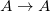
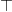
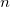

Logic and Proof
3 Truth Tables and Semantics
In the last chapter, we saw how to prove a formula of propositional logic from hypotheses. Some formulas are provable outright, from no hypotheses at all, such as the formula .
It seems intuitively clear that, in contrast, we cannot prove the
formula  without additional assumptions. Try it in Lean:
without additional assumptions. Try it in Lean:
It should seem unlikely that there is an argument we could put in
place of the "sorry" to complete this proof. After all, B could be
false!
What do we mean by "false," exactly? We used the identifiers true
and false to denote certain propositions in Lean, but here we are
using the words in a difference sense, as values, or judgments, we
can assign to propositional formulas. Such evaluations belong to the
realm of semantics. Formulas and formal proofs are syntactic
notions, which is to say, they are represented by symbols and symbolic
structures. Truth is a semantic notion, in that it ascribes a type
of meaning to certain formulas.
Syntactically, we were able to ask and answer questions like the following:
- Given a set of hypotheses, , and a formula,
 , can we
drive from ?
, can we
drive from ? - What formulas can be derived from ?
- What hypotheses are need to derive ?
The questions we consider semantically are different:
- Given an assignment of truth values to the propositional
variables occuring in a formula , is true or false?
- Is there any truth assignment that makes true?
- Which are the truth assignments that make true?
These syntactic and semantic notions complement each other, in ways we will describe below. But first, we will discuss methods we can use to answer semantic questions like the ones above.
3.1 Truth values and assignments
The first notion we will need is that of a truth value. We have
already seen two, namely, "true" and "false." We will use the symbols
and in informal mathematics. These are the values
that  and  are intended to denote in natural deduction,
and
are intended to denote in natural deduction,
and true and false are intended to denote in Lean.
In this text, we will adopt a "classical" notion of truth, following
our discussion in Section Classical Reasoning. This can be understood
in various ways, but, concretely, it comes down to this: we will
assume that any proposition is either true or false, but not
both. This conception of truth is what underlies the law of the
excluded middle,  . Semantically, we read this sentence
as saying "either is true, or
. Semantically, we read this sentence
as saying "either is true, or  is true." Since, in our
semantic interpretation, is true exactly when is false,
the law of the excluded middle says that is either true or false.
is true." Since, in our
semantic interpretation, is true exactly when is false,
the law of the excluded middle says that is either true or false.
The next notion we will need is that of a truth assignment, which is simply a function that assigns a truth value to each element of a propositional variables. For example, the function defined by
is a truth assignment for the set of variables .
Intuitively, a truth assignment describes a possible "state of the world." Going back to the Malice and Alice puzzle, let's suppose the following letters are shorthand for the statements:
 := Alice's brother was the victim
:= Alice's brother was the victim- := Alice was the killer
- := Alice was in the bar
In the world described by the solution to the puzzle, the first and
third statements are true, and the second is false. So our truth
assignment gives the value to and , and the value
to .
3.2 Evaluating Formulas
Once we have a truth assignment to a set of propositional variables, we can extend it to a valuation function , which assigns a value of true or false to every propositional formula that depends only on these variables. The function is defined recursively, which is to say, formulas are evaluated from the bottom up, so that value assigned to a compound formula is determined by the values assigned to its components. Formally, the function is defined as follows:
- , where is any propositional variable.
- if is , and vice versa.
- if and are both , and otherwise.
- if at least one of and
 is ; otherwise .
is ; otherwise .  if either is or
is , and otherwise. (Equivalently,
if is and
is , and otherwise.)
if either is or
is , and otherwise. (Equivalently,
if is and
is , and otherwise.)
The rules for conjunction and disjunction are easy to understand. "A and B" is true exactly when A and B are both true; "A or B" is true when at least one of A or B is true.
Understanding the rule for implication is trickier. People are often surprised to hear that any if-then statement with a false hypothesis is supposed to be true. The statement "if I have two heads, then circles are squares" may sound like it ought to be false, but by our reckoning, it comes out true. To make sense of this, think about the difference between the two sentences:
- "If I have two heads, then circles are squares."
- "If I had two heads, then circles would be squares."
The second sentence is an example of a counterfactual implication. It asserts something about how the world might change, if things were other than they actually are. Philosophers have studied counterfactuals for centuries, but mathematical logic is concerned with the first sentence, a material implication. The material implication asserts something about the way the world is right now, rather than the way it might have been. Since it is false that I have two heads, the statement "if I have two heads, then circles are squares" is true.
Why do we evaluate material implication in this way? Once again, let us consider the true sentence "every natural number that is prime and greater than two is odd." We can interpret this sentence as saying that all of the (infinitely many) sentences in this list are true:
- if 0 is prime and greater than 2, then 0 is odd
- if 1 is prime and greater than 2, then 1 is odd
- if 2 is prime and greater than 2, then 2 is odd
- if 3 is prime and greater than 2, then 3 is odd
- …
The first sentence on this list is a lot like our "two heads" example, since both the hypothesis and the conclusion are false. But since it is an instance of a statement that is true in general, we are committed to assigning it the value . The second sentence is a different: the hypothesis is still false, but here the conclusion is true. Together, these tell us that whenever the hypothesis is false, the conditional statement should be true. The fourth sentence has a true hypothesis and a true conclusion. So from the second and fourth sentences, we see that whenever the conclusion is true, the conditional should be true as well. Finally, it seems clear that the sentence "if 3 is prime and greater than 2, then 3 is even" should not be true. This pattern, where the hypothesis is true and the conclusion is false, is the only one for which the conditional will be false.
Let us motivate the semantics for material implication another way,
using the deductive rules described in the last chapter. Notice that,
if  is true, we can prove without any assumptions about
.
is true, we can prove without any assumptions about
.
This follows from the proper reading of the implication introduction
rule: given , one can always infer , and then cancel an
assumption , . If was never used in the
proof, the conclusion is simply weaker than it needs to be. This
inference is validated in Lean:
Similarly, if is false, we can prove without any
assumptions about :
In Lean:
Finally, if is true and is false, we can prove :
Once again, in Lean:
3.3 Finding truth assignments
Now that we have defined the truth of any formula relative to a truth
assignment, we can answer our first semantic question: given an
assignment of truth values to the propositional variables occuring
in some formula , how do we determine whether or not is
true? This amounts to evaluating  , and the recursive
definition of gives a recipe: we evaluate the expressions
occurring in from the bottom up, starting with the propositional
variables, and using the evaluation of an expression's components to
evaluate the expression itself. For example, suppose our truth
assignment makes and true and
, and the recursive
definition of gives a recipe: we evaluate the expressions
occurring in from the bottom up, starting with the propositional
variables, and using the evaluation of an expression's components to
evaluate the expression itself. For example, suppose our truth
assignment makes and true and  false. To evaluate under , note that the expression comes out false and the expression
false. To evaluate under , note that the expression comes out false and the expression  comes out
true. Since a disjunction "false or true" is true, the entire formula
is true.
comes out
true. Since a disjunction "false or true" is true, the entire formula
is true.
We can also go in the other direction: given a formula, we can attempt
to find a truth assignment that will make it true (or false). In fact,
we can use Lean to evaluate formulas for us. In the example that
follows, you can assign any set of values to the proposition symbols
A, B, C, D, and E. When you run Lean on this input, the
output of the eval statement is the value of the expression.
Try varying the truth assignments, to see what happens. You can add your own formulas to the end of the input, and evaluate them as well. Try to find truth assignments that make each of the formulas tested above evaluate to true. For an extra challenge, try finding a single truth assignment that makes them all true at the same time.
3.3.1 Truth tables
The second and third semantic questions we asked are a little trickier than the first. Instead of considering one particular truth assignment, they ask us to quantify over all possible truth assignments.
Of course, the number of possible truth assignments depends on the number of propositional letters we're considering. Since each letter has two possible values,  letters will produce possible truth assignments. This number grows very quickly, so we'll mostly look at smaller formulas here.
We'll use something called a truth table to figure out when, if ever, a formula is true. On the left hand side of the truth table, we'll put all of the possible truth assignments for the present propositional letters. On the right hand side, we'll put the truth value of the entire formula under the corresponding assignment.
To begin with, truth tables can be used to concisely summarize the semantics of our logical connectives:
![\begin{center}
\begin{tabular} {|c|c||c|}
\hline
$A$ & $B$ & $A \wedge B$ \\ \hline
$\true$ & $\true$ & $\true$ \\ \hline
$\true$ & $\false$ & $\false$ \\ \hline
$\false$ & $\true$ & $\false$ \\ \hline
$\false$ & $\false$ & $\false$ \\ \hline
\end{tabular}
\quad
\begin{tabular} {|c|c||c|}
\hline
$A$ & $B$ & $A \vee B$ \\ \hline
$\true$ & $\true$ & $\true$ \\ \hline
$\true$ & $\false$ & $\true$ \\ \hline
$\false$ & $\true$ & $\true$ \\ \hline
$\false$ & $\false$ & $\false$ \\ \hline
\end{tabular}
\quad
\begin{tabular} {|c|c||c|}
\hline
$A$ & $B$ & $A \to B$ \\ \hline
$\true$ & $\true$ & $\true$ \\ \hline
$\true$ & $\false$ & $\false$ \\ \hline
$\false$ & $\true$ & $\true$ \\ \hline
$\false$ & $\false$ & $\true$ \\ \hline
\end{tabular}
\end{center}](ltxpng/03_Truth_Tables_and_Semantics.org.temp_b92855ef07a019d2dd2f9cc39a141a08cb3b5d19.png)
We will leave it to you to write the tabel for , as an easy
exercise.
For compound formulas, the style is much the same. Sometimes it can be helpful to include intermediate columns with the truth values of subformulas:
![\begin{center}
\begin{tabular} {|c|c|c||c|c||c|}
\hline
$A$ & $B$ & $C$ & $A \to B$ & $B \to C$ & $(A \to B) \vee (B \to C)$ \\ \hline
$\true$ & $\true$ & $\true$ & $\true$ & $\true$ & $\true$ \\ \hline
$\true$ & $\true$ & $\false$ & $\true$ & $\false$ & $\true$ \\ \hline
$\true$ & $\false$ & $\true$ & $\false$ & $\true$ & $\true$ \\ \hline
$\true$ & $\false$ & $\false$ & $\false$ & $\true$ & $\true$ \\ \hline
$\false$ & $\true$ & $\true$ & $\true$ & $\true$ & $\true$ \\ \hline
$\false$ & $\true$ & $\false$ & $\true$ & $\false$ & $\true$ \\ \hline
$\false$ & $\false$ & $\true$ & $\true$ & $\true$ & $\true$ \\ \hline
$\false$ & $\false$ & $\false$ & $\true$ & $\true$ & $\true$ \\ \hline
\end{tabular}
\end{center}](ltxpng/03_Truth_Tables_and_Semantics.org.temp_466f16d0623d2f95df2905261a7e168a98a60931.png)
By writing out the truth table for a formula, we can glance at the rows and see which truth assignments make the formula true. If all the entries in the final column are , as in the above example, the formula is said to be valid.
We can use Lean to check if whether we have evaluated a formula correctly:
You can replace the formula A ∧ (B → A) with any other formula
involving the variables A and B. Then, leaving the first two
columns alone, modify the third column by entering the value true or
false corresponding to the assignment in the first two columns. The
resulting expression will evaluate to true if and only if you have
entered the correct truth values.
(The precise mechanism by which this works is not important right now,
but in case you are curious, the idea is as follows. In the
expression, the e is "locally" defined to be the function which
takes two truth values A and B as input, and evaluates A ∧ (B →
A) relative to these inputs. For each line in the truth table, the
expression checks whether the formula evaluates to the value you
entered, and takes the conjunction of the results.)
Here is the analogous setup for three variables:
3.4 Soundness and Completeness
Fix a deductive system, such as natural deduction. A
propositional formula is said to be provable if there is a formal
proof of it in the system. A propositional formula is said to be a
tautology, or valid, if it is true under any truth
assignment. Provability is a syntactic notion, insofar as it asserts
the existence of a syntactic object, namely, a proof. Validity is a
semantic notion, insofar as it has to do with truth assignments and
valuations. But, intuitively, these notions should coincide: both
express the idea that a formula has to be true, or is
necessarily true, and one would expect a good proof system to enable
us to derive the valid formulas.
Because of the way we have chosen our inference rules and defined the notion of a valuation, this intuition holds true. The statement that every provable formula is valid is known as soundness, and the statement that we can prove every valid formula is known as completeness.
These notions extend to provability from hypotheses. If is a
set of propositional formulas and is a propositional formula, then
is said to be a logical consequence of if, given any
truth assignment that makes every formula in true, is
true as well. In this extended setting, soundness says that if is
provable from , then is a logical consequence of
. Completeness runs the other way: if is a logical
consequence of , it is provable.
Notice that with the rules of natural deduction, a formula is
provable from a set of hypotheses if and only
if the formula is
provable outright, that is, from no hypotheses. So, at least for
finite sets of formulas , the two statements of soundness and
completeness are equivalent.
Proving soundness and completeness belongs to the realm of metatheory, since it requires us to reason about our methods of reasoning. This is not a central focus of this course: we are more concerned with using logic and the notion of truth than with establishing their properties. But the notions of soundness and completeness play an important role in helping us understand the nature of the logical notions, and so we will try to provide some hints here as to why these properties hold for propositional logic.
Proving soundness is easier. We wish to show that whenever is
provable from a set of hypotheses, , then is a logical
consequence of . In a later chapter, we will consider proofs
by induction, which allows us to establish a property holds of a
general collection of objects by showing that it holds of some
"simple" ones and is preserved under the passage to objects that are
more complex. In the case of natural deduction, it is enough to show
that soundness holds of the most basic proofs — using the assumption
rule — and that it is preserved under each rule of inference. The
base case is easy: the assumption rule says that is provable from
hypothesis , and clearly every truth assignment that makes true
makes true. The inductive steps are not much harder; it involves
checking that the rules we have chosen mesh with the semantic
notions. For example, suppose the last rule is the and introduction
rule. In that case, we have a proof of from some hypotheses
, and a proof of from some hypotheses  , and we
combine these to form a proof of from the hypotheses in
, that is, the hypotheses in both. Inductively, we
can assume that is a logical consequence of and that
is a logical consequence of . Let be any truth assignment
that makes every formula in true. Then by the
inductive hypothesis, we have that it makes true, and true as
well. By the definition of the valuation function, , as required.
, and we
combine these to form a proof of from the hypotheses in
, that is, the hypotheses in both. Inductively, we
can assume that is a logical consequence of and that
is a logical consequence of . Let be any truth assignment
that makes every formula in true. Then by the
inductive hypothesis, we have that it makes true, and true as
well. By the definition of the valuation function, , as required.
Proving completeness is harder. It suffices to show that if is any
tautology, then is provable. One strategy is to show that natural
deduction can simulate the method of truth tables. For example,
suppose is build up from propositional variables and . Then
in natural deduction, we should be able to prove
with one disjunct for each line of the truth table. Then, we should
be able to use each disjunct to "evaluate" each expression occurring
in , proving it true or false in accordance with its valuation,
until we have a proof of itself.
A nicer way to proceed is to express the rules of natural deduction
in a way that allows us to work backwards from in search of a
proof. In other words, first, we give a procedure for constructing a
derivation of by working backwards from . Then we argue that if
the procedure fails, then, at the point where it fails, we can find a
truth assignment that makes false. As a result, if every truth
assignment makes true, the procedure returns a proof of .